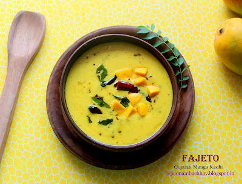

Gujarati Kadhi Recipe

Ingredients
Main Ingredients
- 4 cups water
- 2 cups plain yogurt
- 2 tablespoons chickpea flour (besan)
- 4 green chile peppers, halved lengthwise
- 1 tablespoon minced fresh ginger root
- 1 tablespoon white sugar, or to taste
- ½ teaspoon ground turmeric
- Salt to taste
Tadka
- 1 tablespoon vegetable oil
- 1 tablespoon ghee
- 2 dried red chile peppers, broken into pieces
- 1 sprig fresh curry leaves
- ½ teaspoon cumin seeds
- ½ teaspoon mustard seeds
- 1 pinch asafoetida powder
Other Ingredients
- ¼ cup chopped cilantro leaves
Directions
- In a large saucepan, mix together water, yogurt, and chickpea flour until smooth. Add green chile peppers, ginger, sugar, turmeric, and salt. Bring to a boil, then reduce heat to low and simmer for 5 to 10 minutes.
- Prepare the tadka: Heat oil and ghee in a small skillet over medium heat. Fry the dried red chile peppers, curry leaves, cumin seeds, mustard seeds, and asafoetida powder in the oil-ghee mixture until the seeds start to splutter.
- Stir the tadka into the yogurt mixture in the saucepan. Mix in chopped cilantro.
- Serve hot and enjoy!